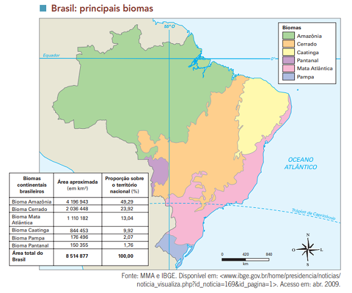
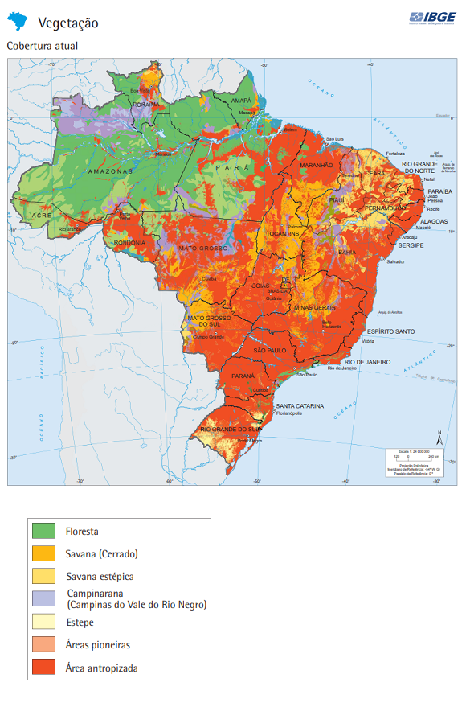
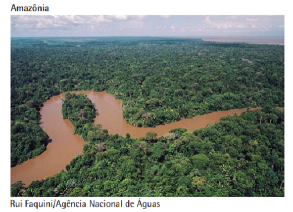
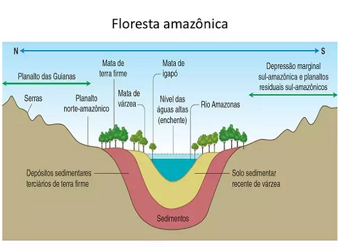
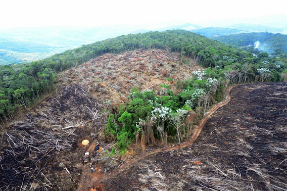
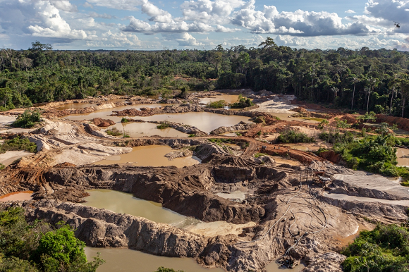
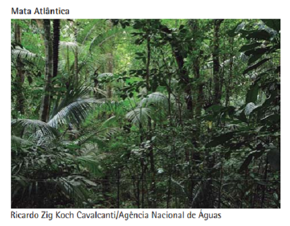
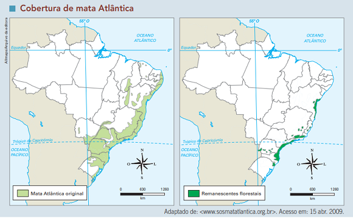
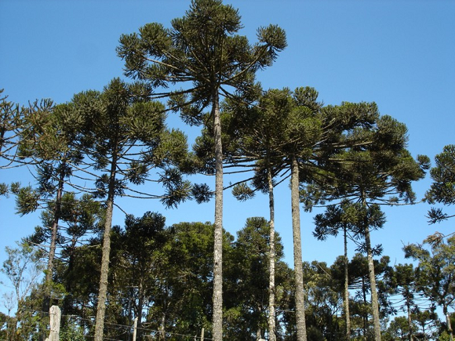
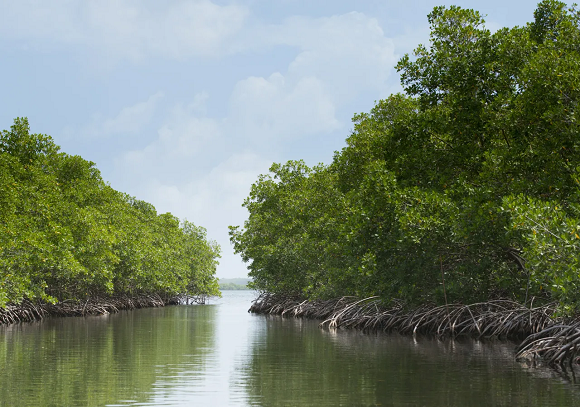

Conteúdo: Floresta amazônica; Mata Atlântica; Mata de Araucárias.
Objetivo: Destacar as principais características das vegetações do Brasil: Floresta
amazônica, Mata atlântica, Manguezal; Mata de Araucárias e os impactos da interferência humana nesses
domínios.
Digite seu nome
Introdução
Na aula passada, entramos em contato com os principais problemas
climáticos do Brasil e sobre a influência das massas de ar, intervenções no relevo para tratar dessa
questão.
Hoje, vamos relacionar o principal parceiro do clima: a vegetação em nosso país. Nessa primeira parte vamos
conhecer a Floresta amazônica, a Mata Atlântica e a Mata de Araucárias e seus problemas.
O Brasil é conhecido pela exuberância de sua vegetação, mas também pela sua ação predatória ao longo dos
séculos.
Questões para serem respondidas no caderno sobre o tema da aula de hoje:
1. Por que a vegetação é considerada um elemento fundamental para a manutenção da vida na Terra?
2. Como o clima influencia a formação de diferentes tipos de vegetação?
3. Quais são os três principais subgrupos vegetacionais da Floresta Amazônica e quais são suas características?
4. Quais são as principais causas do desmatamento na Floresta Amazônica mencionadas no texto?
5. Qual é o impacto do garimpo na Floresta Amazônica e como ele afeta o meio ambiente e a saúde humana?
6. Quais fatores históricos contribuíram para a degradação da Mata Atlântica ao longo dos séculos?
7. Explique a importância ecológica do mangue e quais são as principais ameaças enfrentadas por esse ecossistema.
8. Como a Floresta de Araucária contribui para o equilíbrio ambiental e qual é a principal ameaça enfrentada por esse ecossistema?
9. Quais são algumas das medidas sugeridas no texto para promover a conservação da vegetação e reduzir a degradação ambiental?
10. Por que a cooperação internacional é considerada importante na preservação dos biomas e no enfrentamento dos desafios ambientais?
1. Importância do Estudo da Vegetação:
Produção de oxigênio e regulação do clima.
Preservação da biodiversidade.
Proteção do solo e regulação dos recursos hídricos.
Papel no equilíbrio ecológico.
2. Tipos de Vegetação no Brasil:
Floresta Amazônica: rica em biodiversidade e essencial para o clima global.
Mata Atlântica: altamente degradada, com apenas 7% da área original restante.
Floresta de Araucária: ameaçada pelo desmatamento e exploração madeireira.
Manguezais: ecossistemas costeiros importantes para a proteção das áreas litorâneas.
3. Ameaças à Vegetação:
Desmatamento para agricultura e pecuária.
Mineração e garimpo ilegal.
Construção de usinas hidrelétricas.
Biopirataria e poluição.
Expansão urbana e queimadas.
4. Consequências da Degradação:
Perda de biodiversidade.
Alterações climáticas e aumento da erosão.
Contaminação por mercúrio e outros poluentes.
Diminuição dos recursos hídricos e maior vulnerabilidade das áreas costeiras.
5. Caminhos para a Conservação:
Fortalecimento da fiscalização ambiental.
Criação e gestão de áreas protegidas.
Estímulo à economia verde e sustentável.
Investimento em pesquisa e educação ambiental.
Participação da sociedade civil e diálogo entre grupos.
Cooperação internacional para a preservação.
A importância do estudo da vegetação
A vegetação é um elemento fundamental para a manutenção da vida na Terra, pois desempenha papéis importantes,
como a produção de oxigênio, a regulação do clima e a preservação da biodiversidade. No Brasil, um país rico
em diversidade biológica, destacam-se diferentes formações vegetais, como a Floresta Amazônica, a Mata
Atlântica, o Manguezal e a Mata de Araucárias, que veremos nesta aula.
Na Geografia, a vegetação é definida como a cobertura vegetal ou biomas
existente em determinada área ou região. Refere-se à presença e distribuição das plantas em um determinado
espaço geográfico. A vegetação é influenciada por fatores como clima, solo, relevo, disponibilidade de água
e ação humana.
×
Biomas: o conceito de bioma diz respeito a um imenso ecossistema, uma paisagem
natural, geralmente definido pela vegetação (a taiga, a savana, as pradarias, etc.), que abrange
uma área de milhares - ou milhões - de quilômetros quadrados. O termo bioma é de origem
norte-americana; os europeus em geral, para se referir ao mesmo fenômeno, preferem falar em
biocenose ou formação florestal (ou paisagem vegetal).
A classificação da vegetação é feita levando em consideração suas características físicas, estrutura,
composição florística e adaptabilidade ao ambiente. Dessa forma, diferentes tipos de vegetação podem ser
identificados, como florestas, savanas, estepe, pradarias, tundra, entre outros.Veja o mapa para a
classificação dos biomas ou da cobertura vegetal sem a interferência humana.

Fonte: Vesentini (2013).
A vegetação desempenha um papel fundamental na manutenção do equilíbrio ecológico, fornecendo habitat para
diversas espécies, regulando o ciclo da água, capturando carbono e contribuindo para a produção de oxigênio.
Além disso, a vegetação desempenha um papel importante na proteção do solo contra a erosão e na moderação do
clima. E agora, veja um mapa, após a modificação do espaço pelo homem.

Fonte: Vesentini (2013).
A área destacada em vermelho corresponde as modificações realizadas pelos seres humanos. Ao centro do país
ocorrem o cerrado (Savana brasileira), bem como estepes no Rio Grande do Sul e vegetação semiárida no sertão
nordestino. Além da grande parte da vegetação amazônica, dentre outros contatos entre vegetações distintas.
O estudo da vegetação na geografia envolve a análise dos diferentes tipos de vegetação encontrados em
diferentes regiões, bem como as interações entre a vegetação e os demais elementos do ambiente, como os
seres humanos, a fauna, o clima e o relevo.
A vegetação na floresta amazônica
A Floresta Amazônica é uma das formações vegetais mais icônicas do Brasil e do mundo. Situada principalmente
na região Norte do país, é caracterizada pelo clima equatorial, com alta temperatura e umidade ao longo do
ano. Sua extensão abrange a bacia do Rio Amazonas, sendo considerada a maior floresta tropical contínua do
planeta.

Fonte: IBGE.
A vegetação predominante na Floresta Amazônica é conhecida como floresta equatorial latifoliada perene. Essa
designação faz referência à presença de árvores de grande porte e folhas largas que permanecem verdes
durante todo o ano. É uma floresta exuberante, com uma enorme diversidade de espécies vegetais, abrigando
uma ampla variedade de fauna e flora.
Devido à imensa extensão da Floresta Amazônica e à heterogeneidade de suas condições ambientais, podem ser
identificados três principais subgrupos vegetacionais: Mata de Igapó, Mata de Várzea e Mata de Terra Firme.

A Mata de Igapó é encontrada nas áreas inundáveis da região amazônica, como margens de rios, lagos e
igarapés. Essas áreas são periodicamente alagadas, o que influencia diretamente na composição e
adaptabilidade da vegetação. As espécies vegetais presentes na Mata de Igapó são adaptadas à inundação
sazonal, possuindo raízes aéreas e copas mais estreitas.
A Mata de Várzea ocorre nas áreas próximas aos rios, onde ocorrem inundações temporárias. Esse ambiente
apresenta solos mais férteis devido ao acúmulo de sedimentos trazidos pelas cheias dos rios. A Mata de
Várzea é caracterizada por árvores de grande porte, incluindo espécies como a seringueira e a castanheira.
Essas áreas são importantes para a pesca e para o sustento das populações ribeirinhas.
Já a Mata de Terra Firme compreende a maior parte da Floresta Amazônica e é encontrada em áreas não sujeitas
a inundação. É caracterizada por solos mais pobres e relevo mais elevado, o que influencia na diversidade de
espécies vegetais presentes. Nesse ambiente, encontram-se árvores de grande porte, como a sumaúma e a mogno,
além de uma grande variedade de plantas epífitas, como bromélias e orquídeas.
Além dos subgrupos vegetacionais mencionados, a Floresta Amazônica também apresenta outras formações, como
áreas de transição com savanas (conhecidas como ecótono) e áreas de vegetação secundária decorrentes de
distúrbios naturais, como queimadas ou eventos climáticos extremos.
A importância da Floresta Amazônica vai além de sua imensa biodiversidade. Ela desempenha um papel
fundamental na regulação climática global, contribuindo para o equilíbrio do ciclo hidrológico, a produção
de oxigênio e o sequestro de carbono. No entanto, a floresta enfrenta desafios significativos, como o
desmatamento ilegal, a exploração madeireira predatória e as pressões da atividade agrícola. A preservação
desse importante ecossistema é essencial para a conservação da biodiversidade e a sustentabilidade
ambiental.
A degradação da vegetação
O desmatamento da Floresta Amazônica é uma das maiores preocupações ambientais do Brasil e do mundo. Diversos
fatores têm contribuído para a perda alarmante de áreas florestais nessa região.

Fonte: https://organicsnewsbrasil.com.br
O avanço da fronteira agrícola é uma das principais causas do desmatamento. A expansão da agricultura,
pecuária e cultivo de soja tem levado à derrubada e queimada de grandes extensões da floresta. Apesar de o
solo amazônico ser considerado pobre em nutrientes, práticas como o corte e queima da vegetação têm sido
adotadas para viabilizar a produção agrícola e pecuária. O desmatamento ao longo das rodovias de penetração,
que facilitam o acesso a áreas remotas, tem sido especialmente impactante.
Os garimpos de ouro e cassiterita (estanho) também têm contribuído para a degradação da Floresta Amazônica.
As atividades de mineração, principalmente no Pará, Rondônia, norte de Mato Grosso e Amapá, resultam na
abertura de enormes clareiras na floresta, além da poluição dos rios devido aos resíduos e produtos químicos
utilizados no processo de extração.
A construção de usinas hidrelétricas na região também tem desencadeado impactos significativos no
ecossistema amazônico. A formação de imensos lagos e reservatórios para a geração de energia elétrica tem
levado ao desaparecimento de grandes áreas de mata nativa, que ficam submersas com a formação desses
reservatórios. Esse fenômeno afeta não apenas a vegetação, mas também a fauna e a população local que
depende desses recursos naturais.
Além dos problemas mencionados, a Floresta Amazônica também enfrenta desafios relacionados à biopirataria. A
apropriação indevida de recursos biológicos e conhecimentos tradicionais das populações indígenas tem
ocorrido, muitas vezes, sem a devida compensação ou consentimento. Empresas multinacionais e instituições
científicas têm patenteado esses recursos e conhecimentos, explorando-os comercialmente sem compartilhar os
benefícios com as comunidades de origem.
As queimadas também são uma prática comum na transformação da floresta em áreas destinadas à agricultura e
pecuária. O fogo é utilizado para limpar o terreno e prepará-lo para o plantio ou para controlar o
desenvolvimento de pragas invasoras. No entanto, as queimadas descontroladas acarretam graves consequências
para a vegetação e o meio ambiente, incluindo a extinção de espécies nativas, a emissão de gases de efeito
estufa e o desequilíbrio do ecossistema.
O garimpo ilegal
O garimpo é uma atividade que tem causado sérios impactos ambientais na região amazônica. O extrativismo
mineral, em particular a extração de ouro, tem contribuído significativamente para a degradação do domínio
amazônico.

Fonte: https://amazonia.org.br/
Estima-se que existam cerca de 20 regiões na Amazônia com alta concentração de atividades de garimpo de ouro.
Essas áreas são caracterizadas pela presença de garimpos informais, muitas vezes operando com infraestrutura
precária e sem os devidos controles ambientais.
Uma das principais preocupações relacionadas ao garimpo é a liberação de mercúrio no meio ambiente. O
mercúrio é utilizado no processo de extração do ouro, sendo misturado ao minério para facilitar a separação
do metal precioso. No entanto, a má gestão desse elemento tóxico tem consequências devastadoras para o
ecossistema amazônico.
O mercúrio utilizado nos garimpos é liberado nos rios, no ar e no solo durante as etapas de extração e
beneficiamento do ouro. Essa contaminação tem efeitos prejudiciais para a fauna, a flora e as comunidades
humanas que dependem dos recursos naturais da região. O mercúrio pode se acumular nos organismos vivos,
passando pela cadeia alimentar e afetando desde os peixes até os seres humanos que consomem esses peixes
contaminados. A exposição crônica ao mercúrio pode causar graves danos à saúde, incluindo problemas
neurológicos e reprodutivos.
Além da contaminação por mercúrio, o garimpo também provoca a destruição de grandes áreas de floresta. A
abertura de clareiras e a remoção da vegetação para a criação de garimpos contribuem para a perda de habitat
de várias espécies, levando à diminuição da biodiversidade na região.
Outro problema associado ao garimpo é a utilização indiscriminada de recursos hídricos. A atividade requer
grande quantidade de água para a lavagem do minério e a separação do ouro, o que pode resultar na escassez e
na contaminação da água em áreas próximas aos garimpos.
Esses impactos do garimpo na Amazônia reforçam a necessidade de políticas e práticas que busquem o controle e
a regularização dessa atividade, garantindo a adoção de medidas ambientalmente responsáveis. O
fortalecimento da fiscalização, a promoção de alternativas sustentáveis de subsistência para as comunidades
locais e a conscientização sobre os riscos ambientais e à saúde são passos essenciais para mitigar os danos
causados pelo garimpo na região amazônica.
A destruição da Mata Atlântica
A Mata Atlântica, um dos biomas mais ricos e diversificados do mundo, tem enfrentado sérios desafios de
conservação ao longo da história. Desde o período colonial, com a expansão do cultivo da cana-de-açúcar, a
Mata Atlântica começou a ser devastada. Durante o século XVIII, a mineração e a agricultura cafeeira foram
responsáveis por um intenso desmatamento no bioma. Posteriormente, o desenvolvimento industrial e a expansão
urbana se tornaram fatores significativos na redução da Mata Atlântica. Atualmente, essa região abriga as
cidades mais populosas do Brasil e os principais parques industriais do país.
A Mata Atlântica é caracterizada por um clima tropical úmido, que se estende do Rio Grande do Sul ao Rio
Grande do Norte. Originalmente, esse bioma ocupava uma área de aproximadamente 1 milhão de km². No entanto,
devido à intensa degradação, restam apenas cerca de 7% de sua área original. A Mata Atlântica é composta por
uma floresta densa e úmida, presente principalmente nas encostas da Serra do Mar. Os solos desse bioma estão
sujeitos a altos níveis de umidade e intemperismo químico, o que resulta no desgaste da matéria orgânica e
dos sais minerais.

Fonte: IBGE
Warren Dean, um renomado historiador ambiental, dedicou parte de sua pesquisa ao estudo da Mata Atlântica. Em
seu livro "A Ferro e Fogo: A História e a Devastação da Mata Atlântica Brasileira", Dean analisa a história
de exploração e degradação desse bioma. Ele examina as várias atividades humanas, como a urbanização, o
cultivo de café, a cana-de-açúcar e a exploração madeireira, que tiveram um impacto significativo na Mata
Atlântica ao longo dos séculos.
A destruição da Mata Atlântica resultou na perda de uma imensa biodiversidade. Esse bioma abriga uma grande
variedade de espécies endêmicas e ameaçadas de extinção, incluindo animais icônicos como o mico-leão-dourado
e a onça-pintada. Além disso, a Mata Atlântica desempenha um papel fundamental na regulação dos recursos
hídricos, na proteção dos solos e no sequestro de carbono, contribuindo para o equilíbrio climático.

Fonte: Vesentini (2013).
Apesar dos desafios enfrentados, esforços de conservação vêm sendo realizados para preservar e restaurar a
Mata Atlântica. A criação de unidades de conservação, a implementação de políticas de proteção ambiental e o
engajamento da sociedade civil têm sido fundamentais nesse processo. A Mata Atlântica é reconhecida como um
hotspot de biodiversidade e sua preservação é essencial para a manutenção dos serviços ecossistêmicos e para
a qualidade de vida das populações que dependem desse bioma.
A floresta de Araucária
A floresta de Araucária é um ecossistema característico das regiões de climas mais amenos, como o tropical
de altitude e o subtropical, abrangendo áreas que se estendem desde o estado de São Paulo até o norte do Rio
Grande do Sul, no Brasil. É também conhecida como "mata dos pinhais", devido à predominância de árvores
aciculifoliadas, como os imponentes pinheiros-do-Paraná (Araucaria angustifolia).

Fonte: IBGE.
Esse tipo de floresta é resultado de condições climáticas passadas, quando paleoclimas mais frios permitiram
o estabelecimento e desenvolvimento da Araucaria angustifólia em vastas áreas. Essa árvore é uma espécie
endêmica e representa um importante componente da biodiversidade dessa região.
A floresta de Araucária possui uma estrutura relativamente homogênea, com a presença predominante de árvores
de grande porte, como as araucárias, que alcançam alturas impressionantes. Além da araucária, também é
possível encontrar outras espécies vegetais adaptadas às condições do local, como o cedro, o ipê-amarelo e o
angico-vermelho.
Esse ecossistema desempenha papéis essenciais no equilíbrio ambiental e na conservação da biodiversidade. A
floresta de Araucária atua como reguladora dos recursos hídricos, contribuindo para o abastecimento de rios
e aquíferos. Além disso, abriga uma variedade de espécies de fauna e flora, incluindo aves, mamíferos e
plantas endêmicas, muitas das quais estão ameaçadas de extinção.
No entanto, a floresta de Araucária também tem sido impactada por atividades humanas ao longo dos anos. O
desmatamento para a exploração madeireira e a conversão de áreas florestais em campos agrícolas são algumas
das principais ameaças enfrentadas por esse ecossistema. A intensa exploração da madeira de araucária,
amplamente utilizada na indústria moveleira e na construção civil, resultou em uma redução significativa da
cobertura original da floresta de Araucária.
A fragilidade desse ecossistema é evidente, e a conservação da floresta de Araucária é fundamental para
preservar sua biodiversidade e os serviços ecossistêmicos por ela prestados. Esforços de proteção e
recuperação, como a criação de unidades de conservação, o manejo sustentável e a conscientização da
importância desse ecossistema, são essenciais para garantir a sobrevivência da floresta de Araucária e para
promover a sua sustentabilidade a longo prazo.
A importância e fragilidade do manguezal
O mangue é um ecossistema costeiro de extrema importância ecológica, que se desenvolve em áreas de transição
entre o ambiente terrestre e o mar. Ele ocorre em regiões tropicais e subtropicais, sendo encontrado ao
longo das costas brasileiras, principalmente nas regiões Norte e Nordeste do país.
O mangue é caracterizado pela presença de árvores adaptadas a condições salobras e encharcadas, como o
mangue-vermelho, o mangue-branco e o mangue-preto. Essas árvores possuem raízes aéreas que ajudam na
obtenção de oxigênio, já que o solo do mangue é rico em matéria orgânica e pobre em oxigênio.

Fonte: https://www.tempo.com/
Esse ecossistema desempenha um papel fundamental na proteção das áreas costeiras contra a erosão e a ação das
marés, funcionando como uma barreira natural contra a invasão do mar. Além disso, o mangue serve como
berçário e refúgio para várias espécies de peixes, crustáceos e aves marinhas, contribuindo para a
diversidade biológica e para a sustentabilidade dos recursos pesqueiros.
A fragilidade do mangue é evidente devido à sua sensibilidade a mudanças ambientais e à ação humana. A
ocupação desordenada das áreas costeiras, o desmatamento para a expansão urbana e a poluição dos rios e
mares representam grandes ameaças para esse ecossistema. Além disso, o avanço da agricultura e da
aquicultura também pode levar à degradação do mangue.
A destruição do mangue traz consequências significativas para o equilíbrio ambiental. A remoção desse
ecossistema resulta na perda de habitat para várias espécies, além de comprometer a qualidade da água e a
estabilidade das áreas costeiras. A falta de áreas de mangue pode aumentar o risco de erosão costeira,
tornando as comunidades locais mais vulneráveis a eventos extremos, como tempestades e ressacas.
É fundamental promover a conservação e a recuperação dos manguezais, por meio da criação de áreas protegidas,
da implementação de políticas de gestão sustentável e do engajamento das comunidades locais. A valorização e
o uso consciente dos recursos naturais provenientes do mangue são essenciais para garantir a preservação
desse ecossistema único e para manter a sua importância econômica, social e ambiental a longo prazo.
Caminhos para um futuro ambientalmente equilibrado
Para diminuir a degradação da vegetação e promover uma melhor convivência entre os grupos humanos nos
diferentes biomas, o estado deve adotar uma abordagem abrangente e integrada, envolvendo políticas,
regulamentações, programas de educação ambiental e incentivos para práticas sustentáveis. Algumas medidas e
caminhos que podem ser seguidos incluem:
Fortalecimento da fiscalização e aplicação de leis ambientais: É essencial que o estado invista em uma
fiscalização eficiente e rigorosa para combater o desmatamento ilegal, a biopirataria e outras
atividades predatórias. Além disso, as leis ambientais devem ser aplicadas de forma justa e eficaz, com
punições adequadas para os infratores.
Criação e gestão de áreas protegidas: O estabelecimento de unidades de conservação, parques nacionais e
reservas ambientais é fundamental para garantir a preservação dos ecossistemas. Essas áreas devem ser
adequadamente gerenciadas, com recursos e estrutura suficientes para proteger a vegetação e regular o
uso sustentável dos recursos naturais.
Estímulo à economia verde e sustentável: O estado pode incentivar a adoção de práticas sustentáveis
através de políticas e programas que promovam a economia verde. Isso pode incluir incentivos fiscais
para empresas que adotem práticas sustentáveis, apoio a iniciativas de agricultura orgânica e
agroflorestal, e estímulo ao turismo sustentável nas regiões de vegetação.
Investimento em pesquisa e desenvolvimento: A pesquisa científica e o desenvolvimento de tecnologias
inovadoras são fundamentais para o manejo sustentável da vegetação. O estado deve investir em pesquisas
que busquem soluções para o uso sustentável dos recursos naturais, a recuperação de áreas degradadas e a
conservação da biodiversidade.
Educação ambiental e conscientização: É fundamental promover a conscientização da importância da
vegetação e dos impactos negativos da degradação ambiental. Programas de educação ambiental devem ser
implementados nas escolas, comunidades e meios de comunicação, visando aumentar o conhecimento e a
conscientização sobre a importância da preservação da vegetação.
Participação da sociedade civil e diálogo entre os grupos: É importante incentivar a participação ativa
da sociedade civil na tomada de decisões relacionadas à proteção da vegetação. O diálogo entre
diferentes grupos, incluindo comunidades tradicionais, povos indígenas, agricultores, empresas e
organizações não governamentais, é essencial para encontrar soluções sustentáveis e promover uma melhor
convivência entre os interesses diversos.
Cooperação internacional: A proteção da vegetação e o enfrentamento dos desafios ambientais exigem
esforços conjuntos em nível global. O estado deve buscar parcerias e cooperação internacional para troca
de conhecimentos, compartilhamento de melhores práticas e apoio financeiro para a conservação da
vegetação.
Essas medidas representam um caminho importante para a diminuição da degradação da vegetação e uma melhor
convivência entre os grupos humanos. No entanto, é fundamental que haja um compromisso político contínuo,
recursos adequados e a participação de todos os setores da sociedade para promover uma gestão ambiental
sustentável e garantir a preservação desses importantes biomas.
Agora é com você!
Atividade: O livro das perguntas
Instruções:
Forme um grupo com 5-6 estudantes;
Cada grupo deve escolher um tópico abaixo e desenvolver três questões relacionadas a ele.
Reflita criticamente e a explore diferentes perspectivas.
Pense em processos, causas e consequências
Faça questões desafiadoras sobre a relação entre o ser humano e a vegetação.
Tempo da atividade: 15 minutos.
Exemplo de tópico
Motivações e Interesses:
- Como as ambições individuais e coletivas podem levar à degradação da vegetação?
- Em que medida a busca por recursos naturais afeta a preservação da vegetação?
Lucro e Crescimento Econômico:
Consciência Ecológica e Conexão com a Natureza:
Educação Ambiental::
Influências Sociais, Culturais e Políticas:
Tecnologia e Degradação da Vegetação:
Responsabilidade Individual e Coletiva:
Consequências da Degradação da Vegetação:
A curiosidade e a vontade de entender o mundo ao nosso redor são fundamentais para
fazer perguntas e contribuir com a construção do conhecimento científico.
P:
Por que no momento atual a vegetação está sendo muito degradada?
R:
A degradação da vegetação no momento atual ocorre devido a uma série de fatores interconectados. Entre
as principais razões estão o avanço da fronteira agrícola, a expansão urbana desordenada, a exploração
desenfreada de recursos naturais, como madeira e minerais, as práticas agrícolas inadequadas, o
desmatamento ilegal, as queimadas descontroladas e a falta de conscientização ambiental. Esses fatores
estão frequentemente associados a interesses econômicos, como a busca por lucro e o crescimento
desenfreado, em detrimento da preservação ambiental.
P:
Por que o ser humano age como se fosse à parte do Planeta?
R:
Existem diversas razões que podem levar o ser humano a não se sentir parte do planeta. Uma delas é a
percepção equivocada de que a humanidade está separada da natureza, como se fosse algo externo e
dominável. Isso pode ser resultado da visão antropocêntrica, que coloca os interesses humanos acima dos
interesses ambientais. Além disso, a sociedade moderna e tecnológica muitas vezes promove um estilo de
vida desconectado da natureza, com pouco contato direto com a vegetação e o meio ambiente, o que pode
gerar uma falta de apreciação e compreensão da importância desses elementos para a nossa existência.
P:
Quais outros tipos de estilos de vida poderiam existir para degradar menos a vegetação no Brasil?
R:
Existem diferentes estilos de vida que poderiam contribuir para a redução da degradação da vegetação no
Brasil. Alguns exemplos incluem:
Agricultura sustentável: Práticas agrícolas que promovem o uso responsável do solo, evitando o
desmatamento e a degradação, além de privilegiar técnicas de plantio e manejo que preservem a
biodiversidade local.
Consumo consciente: Adotar uma postura de consumo mais responsável, dando preferência a produtos que
sejam produzidos de forma sustentável, sem contribuir para o desmatamento ou a degradação da
vegetação.
Energias renováveis: Investir em fontes de energia renováveis, como solar e eólica, reduzindo assim
a dependência de combustíveis fósseis que contribuem para a degradação da vegetação.
Educação ambiental: Promover a conscientização e a educação ambiental em todas as faixas etárias,
destacando a importância da preservação da vegetação e a adoção de práticas sustentáveis em
diferentes áreas da vida cotidiana.
Respeito aos territórios indígenas e tradicionais: Reconhecer e respeitar os direitos dos povos
indígenas e das comunidades tradicionais, que têm um profundo conhecimento e relação sustentável com
a vegetação, valorizando sua participação na conservação dos ecossistemas.
Essas são apenas algumas ideias que poderiam contribuir para um estilo de vida mais harmonioso com a
vegetação, enfatizando a necessidade de uma abordagem integrada que envolva ações individuais, políticas
públicas e uma mudança de mentalidade em relação ao nosso papel no mundo.
Desafio - Jornada do herói: O Retorno com o Elixir
Na última aula, nosso herói encarou seu último teste: A Ressurreição - uma espécie de purificação
antes de ingressar de volta ao Mundo Comum.
Hoje, vamos finalizar essa Jornada com o herói regressando a seu ponto de partida, a última etapa da nossa história chamada de: O Retorno com o Elixir. E aí, estão
prontos encerrar essa etapa da Jornada do Herói? Formem seus grupos e vamos em frente!
Instruções
Forme um grupo com 5-6 estudantes;
Leia o texto abaixo e discuta com seu grupo o conteúdo das questões;
Faça anotações em seu caderno;
Seja criativo, use os conhecimentos que você já possui sobre o Desafio.
Tempo da atividade: 25 minutos.
Retorno com o Elixir (12)
Leia a passagem abaixo:
“Nós, Buscadores, finalmente voltamos para casa, purgados, purificados, trazendo os frutos de
nossa jornada. Dividimos com todos de Nossa Tribo o alimento e o tesouro que trouxemos, além de
uma boa história sobre como isso foi conquistado. Fechou-se um círculo, dá para sentir. Pode-se
ver que nossas lutas na Estrada dos Heróis trouxeram nova vida a nossa terra. Haverá outras
aventuras, mas esta está completa, pois termina trazendo uma cura em profundidade, o bem-estar e
a integração para nosso mundo. Os Buscadores voltaram para casa.”.
O retorno
Retornar com o Elixir significa introduzir a mudança na vida cotidiana e usar as lições da aventura
para curar as feridas no Mundo Comum. É o momento da história de “amarrar as pontas” soltas, retomar
as antigas questões para criar um sensação de fechamento de um círculo.
Geralmente, a maneira mais convencional de chegar ao fim de uma história é produzir a uma sensação de
algo fechado, completado. Na maioria dos filmes e games ocidentais funciona dessa forma. Já a outra
maneira popular na Ásia ou Europa seria o final aberto, no qual permanece perguntas não respondidas.
Nessa fase o herói retorna de onde partiu, relembra como tudo começou e consegue até provocar uma
comparação entre o antes e o agora.
Em Red Dead Redemption 2 - Arthur Morgan, o protagonista, volta ao cenário inicial do jogo,
refletindo sobre seu passado e percebendo a transformação pessoal que ocorreu durante sua jornada.
Surpresa
Um bom retorno deve desatar os fio da meada com uma certa dose de surpresa, um gostinho do
inesperado, uma revelação súbita.
O retorno também pode distribuir uma recompensa final ou até castigos na história. É onde os vilões
recebem seu destino final, pagam por suas maldades com uma punição adequadas aos seus crimes.
Em The Last of Us: Part II: O desfecho da história desafia as noções convencionais de
justiça e redenção, deixando uma forte impressão emocional.
O Elixir
A verdadeira chave do estágio final da Jornada do Herói é o Elixir. O que o herói traz do Mundo
Especial para dividir com os outros no Retorno. É a prova de que ele esteve mesmo lá, serve de
exemplo para os outros e, principalmente, demonstra que é possível superar a morte.
Com a sabedoria trazida pelo Elixir, até mesmo o mundo toda pode se alterar. O herói se torna mais
responsável, mais sábio e formam-se novas relações, famílias etc.
Em Horizon Zero Dawn: Aloy, a protagonista deste jogo de ação e aventura, desvenda os
segredos de um mundo pós-apocalíptico dominado por criaturas mecânicas. Ao final da sua jornada,
Aloy traz consigo o Elixir do conhecimento e renovação, ajudando a reconstruir a sociedade e
trazendo esperança para um futuro melhor.
Epílogo
Da mesma forma que algumas narrativas podem ter um prólogo que precede a ação, outas podem ter uma
epílogo que se segue a história. Pode servir para completar a história, projetando-se adiante, em
alguma época futura, para mostrar o que aconteceu com os personagens.
Em God of War (2018): Após a intensa jornada do protagonista, Kratos, e seu filho Atreus,
apresenta um epílogo que expande a mitologia do jogo e estabelece novas possibilidades para o futuro
da franquia.
Formas de terminar
A história pode, portanto, terminar de quatro maneiras principais: com um ponto final, um ponto de
exclamação, um ponto de interrogação, ou reticências.
Life is Strange apresenta um final aberto e emocional, com consequências significativas para
as escolhas feitas ao longo da história, deixando espaço para interpretações pessoais e reflexões
dos jogadores.
Já The Legend of Zelda: Ocarina of Time - tem um final definitivo, onde o herói, Link,
derrota o vilão, Ganondorf, e restaura a paz em Hyrule.
Questões para se pensar o Retorno com o Elixir:
- Qual é o Elixir que o seu Herói traz da experiência?
- Quem é o herói de sua história agora? Ela mudou de heróis ou alguns personagens elevaram-se e
tornaram-se heróis? Quem se revelou uma decepção? Há surpresas no desfecho final?
- Em que ponto está você, em sua própria Jornada do Herói? Qual é o Elixir que você espera
trazer?
VESENTINI, José William. Geografia: o mundo em transição. Ensino médio. 2. ed. - São
Paulo: Ática, 2013.
VOGLER, Christopher. A jornada do escritor: estruturas míticas para escritores.
Tradução de Ana Maria Machado. 2.ed. Rio de Janeiro: Nova Fronteira, 2006.
SKOLNICK, Evan. Video game storytelling: what every developer needs to know about
narrative techniques.New Yoirk: Watson-Guptill, 2014.